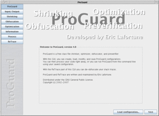
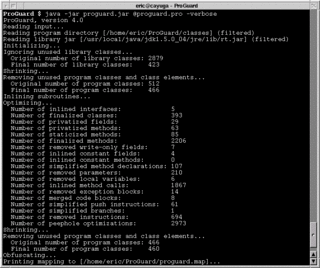

|

The graphical user interface to ProGuard works like a wizard. It allows
you to browse through the presented tabs and fill them out.
You can click on the small tab buttons to see the full-size versions of the tabs. |
|

Of course, real developers don't need all this point-and-click fluff. They
write short configuration files using their favorite text editors and invoke
ProGuard from the command-line.
You can click on the image to see the full-size version. |